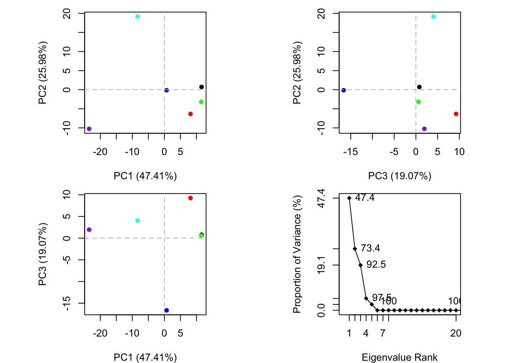
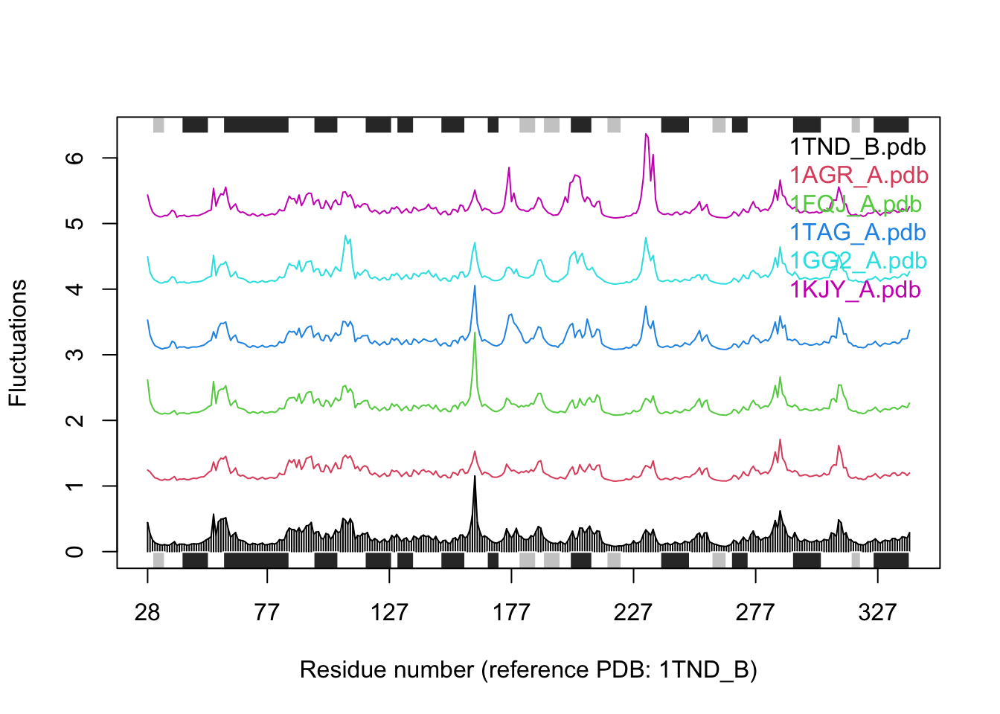

4 Leren van Bio3D - Structurele eiwitanalyse
Voor dit onderdeel van mijn portfolio is 32 uur aan zelfstudietijd beschikbaar gesteld voor het ontwikkelen van een nieuwe, zelfgekozen skill. Deze opdracht biedt de mogelijkheid om je vaardigheden gericht uit te breiden op een manier die aansluit bij je toekomstplannen in het onderzoek. In de onderstaande toelichting leg ik uit welke skill ik heb gekozen en hoe deze aansluit bij mijn toekomstambities.
4.1 Mijn eerste ervaring met AlphaFold
AlphaFold, ontwikkeld door DeepMind, is een baanbrekend artificial intelligence (AI) model dat de driedimensionale (3D) structuur van eiwitten met hoge nauwkeurigheid kan voorspellen op basis van hun aminozuursequentie. Het model leert van vergelijkbare sequentiegegevens uit verschillende organismen. Het combineert kennis over hoe eiwitten zich vouwen op basis van hun chemische eigenschappen. AlphaFold voorspelt hierdoor heel nauwkeurig hoe een eiwit er in 3D uitziet. Dit is een grote doorbraak in de studie van eiwitten.
Tijdens mijn oriëntatie op structurele eiwitanalyse heb ik geprobeerd AlphaFold lokaal op mijn MacBook te installeren en gebruiken. Dit was best uitdagend, vanwege de grote hoeveelheid benodigde data en de installatie. Ik heb onder andere Linux-gebaseerde installatiescripts moeten aanpassen voor macOS, bash scripts herschreven en verschillende vereiste packages geïnstalleerd. Dit gaf me waardevol inzicht in hoe AlphaFold werkt en welke stappen nodig zijn om zo’n model te gebruiken.
Waarom heb ik uiteindelijk gekozen voor Bio3D?
Helaas bleek de volledige installatie van AlphaFold te zwaar voor mijn MacBook, met name vanwege de enorme hoeveelheid data die nodig is voor het gebruik van de AlphaFold database. De opslagbehoefte was niet haalbaar op mijn laptop. Daarom heb ik besloten om in plaats daarvan Bio3D te gebruiken. Dit is een lichtere, maar nog steeds krachtige tool is voor structurele eiwitanalyse. Ook is mogelijk Bio3D te draaien op R via mijn MacBook. Bovendien biedt Bio3D een uitstekende basis om eiwitstructuuranalyse te leren, wat mij in de toekomst beter zal voorbereiden op het werken met meer geavanceerde tools zoals AlphaFold.
4.2 Introductie Bio3D
In mijn toekomstige carrière binnen biomedisch onderzoek is het analyseren en visualiseren van eiwitten en hun structuur essentieel voor het verkrijgen van inzicht in hun functie en interacties. Dit is cruciaal voor het begrijpen van ziektemechanismen en het ontwikkelen van therapieën. De Bio3D package biedt een uitgebreide set met tools voor de structurele analyse van eiwitten. Door deze technieken te beheersen, kan ik inzicht krijgen in de mechanismen waarmee eiwitten functioneren, hoe ze veranderen bij ziekten en hoe ze kunnen worden gemanipuleerd voor therapeutische doeleinden.
Met Bio3D kan ik de basis van eiwitstructuuranalyse leren, inclusief het vergelijken en alignen van eiwitstructuren. Dit is een cruciale vaardigheid voor het interpreteren van data in biomedisch onderzoek, omdat structurele veranderingen vaak een directe invloed hebben op de functie van een eiwit. Deze kennis kan bijdragen aan een beter begrip van ziektemechanismen, het identificeren van potentiële targets en de ontwikkeling van nieuwe behandelingsstrategieën.
Voor deze opdracht ga ik specifiek aan de slag met de tutorial “Beginning Structure Analysis”, waarbij ik mij focus op het onderdeel waar de berekening van de Root Mean Sqaure Deviation (RMSD) wordt toegelicht. Na het volgen van dit onderdeel, zal ik de geleerde technieken toepassen op een onbekende dataset. Hierbij vergelijk ik twee eiwitstructuren, waarvan één wildtype en één mutant, op basis van de RMSD. Vervolgens visualiseer en align ik deze structuren met behulp van PyMOL, om zo de structurele verschillen zowel kwantitatief als visueel te kunnen waarnemen.
RMSD
De RMSD tussen overeenkomstige atomen van twee eiwitketens is een veelgebruikte maat om de gelijkenis tussen twee eiwitstructuren te bepalen. Hoe kleiner de RMSD waarde, hoe meer de twee structuren op elkaar lijken (Reva, 1998).
De RMSD waarde in Ångström (Å) wordt berekend met de formule \(RMSD = \sqrt{\frac{1}{N} \sum_{i=1}^{N} d_i^2}\), waarbij \(n\) het aantal overeenkomende atomen is en \(d_i\) de afstand is tussen het overeenkomstige atoom \(i\) van structuur 1 en structuur 2.
Een RMSD van 0 Å duidt op twee identieke structuren. Een RMSD tussen 0 en 2 Å wijst op kleine structurele verschillen. Waarden tussen 2 en 3 Å wijzen op matige verschillen, die wijzen op veranderingen of functionele impact. Bij een RMSD groter dan 3 Å spreken we van aanzienlijke structurele afwijkingen (Carugo, 2001).
De uiteindelijke structurele verschillen kunnen visueel worden weergegeven met behulp van PyMOL.
4.3 Planning
| Datum | Fase | Omschrijving | Geschatte tijd |
|---|---|---|---|
| 18-5 | Oriëntatie | Oriëntatie op Bio3D package, installatie van benodigde software (R, Bio3D, XQuartz), inlezen in documentatie en wetenschappelijke literatuur, verwerking in toekomstbeeld en introductie schrijven | 6 uur |
| 19-5 | Basisstructuuranalyse | Stapsgewijs doorlopen van de tutorial “Beginning Structure Analysis” (deel 1), testen van functies op voorbeelddata, inclusief documentatie van resultaten | 6 uur |
| 20-5 | Verdieping & visualisatie | Vervolg van de tutorial met nadruk op structurele alignments, berekenen van RMSD, en genereren van visualisaties in PyMOL | 6 uur |
| 21-5 | Analyse eigen dataset | Toepassen van geleerde technieken op een wildtype en mutante eiwitstructuur, interpreteren van RMSD resultaten en visualiseren met PyMOL, verslaglegging | 10 uur |
| 22-5 | Controle en afronding | Controle en verbetering van scripts, nakijken van RMarkdown op leesbaarheid en consistentie, inleveren en reflectie | 4 uur |
| Totale Geschatte Tijd | - | - | 32 uur |
4.3.1 Beginning Structure Analysis tutorial
Set up
# De volgende packages zijn ook nodig voor het gebruik van Bio3D. Voor MacBook wordt aangeraden de volgende packages te installeren via brew.
# brew install homebrew/science/muscle
# brew install homebrew/science/netcdf
# brew install homebrew/science/dssp
# Via brew was dit echter voor mijn geen succes. Ik heb ze via conda gedownload.
# conda install -c bioconda muscle=3.8.1551
# conda install netcdf4
# conda install dsspRMSD berekening
# Download some example PDB files
ids <- c("1TND_B","1AGR_A","1FQJ_A","1TAG_A","1GG2_A","1KJY_A")
raw.files <- get.pdb(ids)## | | | 0% | |============ | 17% | |======================= | 33% | |=================================== | 50% | |=============================================== | 67% | |========================================================== | 83% | |======================================================================| 100%## Reading PDB files:
## split_chain/1TND_B.pdb
## split_chain/1AGR_A.pdb
## split_chain/1FQJ_A.pdb
## split_chain/1TAG_A.pdb
## split_chain/1GG2_A.pdb
## split_chain/1KJY_A.pdb
## ......
##
## Extracting sequences
##
## pdb/seq: 1 name: split_chain/1TND_B.pdb
## pdb/seq: 2 name: split_chain/1AGR_A.pdb
## pdb/seq: 3 name: split_chain/1FQJ_A.pdb
## pdb/seq: 4 name: split_chain/1TAG_A.pdb
## pdb/seq: 5 name: split_chain/1GG2_A.pdb
## pdb/seq: 6 name: split_chain/1KJY_A.pdb## 1TND_B 1AGR_A 1FQJ_A 1TAG_A 1GG2_A 1KJY_A
## 1TND_B 1.000 0.693 0.914 1.000 0.690 0.696
## 1AGR_A 0.693 1.000 0.779 0.694 0.997 0.994
## 1FQJ_A 0.914 0.779 1.000 0.914 0.776 0.782
## 1TAG_A 1.000 0.694 0.914 1.000 0.691 0.697
## 1GG2_A 0.690 0.997 0.776 0.691 1.000 0.991
## 1KJY_A 0.696 0.994 0.782 0.697 0.991 1.000## Calculate RMSD
rmsd <- rmsd(pdbs, fit=TRUE)
# fit=TRUE: je meet alleen structurele verschillen. De ene structuur wordt eerst ruimtelijk uitgelijnd (superposed) op de andere. De rotatie- en translatieverschillen worden weggehaald, zodat alleen de interne structurele verschillen overblijven.
# fit=FALSE: zonder uitlijning (fit=FALSE) zou een klein verschil in positionering al tot een hoge RMSD leiden.Principal Component Analysis (PCA)
PC1 (47.41%), PC2 (25.98%), en PC3 (19.07%) verklaren samen ongeveer 92.5% van de totale structurele variatie (zie de plot rechtsonder). Dit betekent dat met alleen PC1 tot en met PC3 vrijwel alle belangrijke verschillen tussen de eiwitstructuren verklaard kunnen worden. Hoe verder twee punten van elkaar af liggen, hoe meer de structuren van elkaar verschillen op basis van de posities van de overeenkomstige atomen. Als een mutant en wildtype ver uit elkaar liggen, wijst dat op een grote structurele verandering.
De kleur van de punten in de PCA plot gaan op basis van volgorde hoe je de eiwit PDB’s inleest, dus:
| Structuur | Kleur in plot |
|---|---|
| 1TND_B | Zwart |
| 1AGR_A | Rood |
| 1FQJ_A | Groen |
| 1TAG_A | Blauw |
| 1GG2_A | Cyan |
| 1KJY_A | Paars |
De eiwitten 1TND_B, 1AGR_A, en 1FQJ_A lijken sterk op elkaar, gezien hun clustering. 1KJY_A en 1GG2_A wijken hier sterk van af. PCA maakt duidelijk welke structuren functioneel gelijk zijn, zonder meteen alle individuele RMSD waarden te hoeven bekijken.
## NOTE: Removing 37 gap positions with missing coordinate data
## retaining 313 non-gap positions for analysis.
Normal Mode Analysis
NMA is een belangrijke analyse die wordt gebruikt om bewegingen in biomoleculen te onderzoeken. Het is een snelle en relatief eenvoudige methode om trillingsmodi en de flexibiliteit van eiwitten te berekenen. NMA, ook wel eigenwaarde-analyse genoemd, is een techniek die de trillingsvormen en bijbehorende frequenties van een structuur berekent. Kortom, het is een computationele benadering om de flexibiliteit van eiwitten te bestuderen en te karakteriseren.
Een NMA plot helpt om visueel te identificeren welke delen van een eiwit het meest dynamisch zijn en welke meer rigide. Op de x-as staat het residu nummer, dat is de volgorde van aminozuren in het eiwit. Op de y-as staat de RMS fluctaties. De pieken, oftewel hoge RMS fluctaties, geven aan dat de atomen zeer flexibel zijn en grote verplaatsingen kunnen ondergaan in de gesimuleerde normale mode. Dit zijn vaak de mobiele of minder stabiele regio’s van het eiwit.
##
## Details of Scheduled Calculation:
## ... 6 input structures
## ... storing 933 eigenvectors for each structure
## ... dimension of x$U.subspace: ( 939x933x6 )
## ... coordinate superposition prior to NM calculation
## ... aligned eigenvectors (gap containing positions removed)
## ... estimated memory usage of final 'eNMA' object: 40.2 Mb
##
## | | | 0% | |============ | 17% | |======================= | 33% | |=================================== | 50% | |=============================================== | 67% | |========================================================== | 83% | |======================================================================| 100%
4.4 Bronnen
http://thegrantlab.org/bio3d_v2/tutorials/structure-analysis
Boris A Reva, Alexei V Finkelstein, Jeffrey Skolnick. What is the probability of a chance prediction of a protein structure with an rmsd of 6 å?. Folding and Design, Volume 3, Issue 2. 1998. https://doi.org/10.1016/S1359-0278(98)00019-4.
Carugo O, Pongor S. A normalized root-mean-square distance for comparing protein three-dimensional structures. Protein Sci. 2001 Jul;10(7):1470-3. doi: 10.1110/ps.690101. PMID: 11420449; PMCID: PMC2374114.